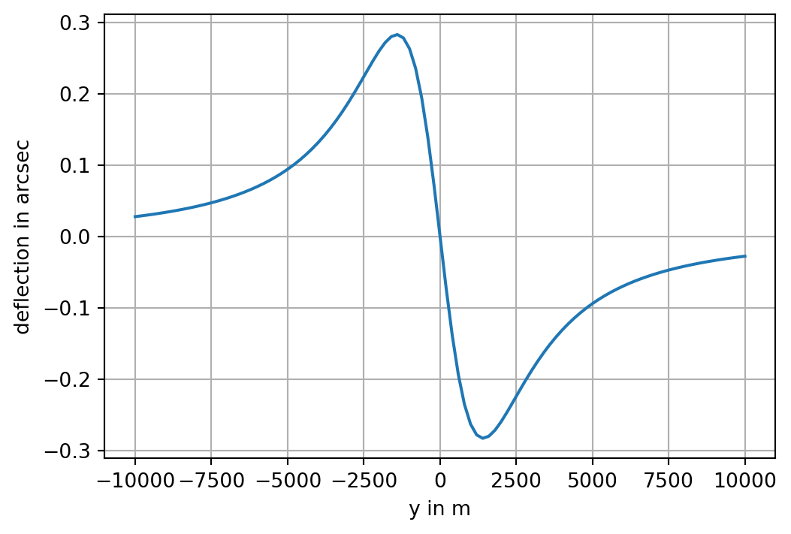

Show the code
y, z, t, f, m = sp.symbols("y z t f m")
V = sp.symbols("V", cls=sp.Function)
V = V(y)
V = -f * m / sp.sqrt(y**2 + (z - t)**2)
print("V=")
VV=\(\displaystyle - \frac{f m}{\sqrt{y^{2} + \left(- t + z\right)^{2}}}\)
\(\require{physics}\)
We consider a sphere of radius \(a\) centered at point \((0,0,t)\) , \(t>0\) . The density contrast is \(\Delta \rho\) .
The excess mass caused by the sphere is therefore
\[ m=\frac{4\pi }{3}a^3 \Delta \rho, \]
its potential is
\[ V(x,y,z)=-f\frac{m}{\sqrt{x^2 +y^2 +(z-t)^2 }}. \]
We restrict our measurements to profiles in the plane \(x=0\).
y, z, t, f, m = sp.symbols("y z t f m")
V = sp.symbols("V", cls=sp.Function)
V = V(y)
V = -f * m / sp.sqrt(y**2 + (z - t)**2)
print("V=")
VV=\(\displaystyle - \frac{f m}{\sqrt{y^{2} + \left(- t + z\right)^{2}}}\)
The vertical component of the gravitational attraction is
\[ V_z (y) := -\pdv{V}{y}. \]
For \(z=0\) we obtain the expression
Vz = -sp.diff(V, z).subs(z, 0)
print('Vz=')
VzVz=\(\displaystyle \frac{f m t}{\left(t^{2} + y^{2}\right)^{\frac{3}{2}}}\)
The horizontal component of the gravitational attraction in \(z=0\) is:
Vy = -sp.diff(V, y).subs(z, 0)
print('Vy=')
Vy.simplify()Vy=\(\displaystyle - \frac{f m y}{\left(t^{2} + y^{2}\right)^{\frac{3}{2}}}\)
and its second derivative with respect to \(y\) evaluated at \(z=0\) is:
Vyy = -sp.diff(V, y, 2).subs(z, 0)
print('Vyy=')
Vyy.simplify()Vyy=\(\displaystyle \frac{f m \left(- t^{2} + 2 y^{2}\right)}{\left(t^{2} + y^{2}\right)^{\frac{5}{2}}}\)
We consider as example a sphere at a depth of \(t=2000\) m with radius \(r=1000\) m. The density contrast is \(\Delta \rho =500\) \(kg/m^3\) . The vertical and horizontal components of the gravitational attraction along a profile at \(z=0\) running from \(-10^4 \le y\le 10^4\) m have to be computed in units of mGal (milliGal).
yy = np.linspace(-1e4, 1e4, 101)
drho = 500
depth = 2000
radius = 1000
mass = 4 * np.pi / 3 * radius**3 * drho
Vz_num = lambda y_: Vz.subs(y, y_).subs(t, depth).subs(f, 6.674e-11).subs(m, mass)
Vy_num = lambda y_: Vy.subs(y, y_).subs(t, depth).subs(f, 6.674e-11).subs(m, mass)
fig, ax = plt.subplots(figsize=(6,4))
plt.plot(yy, [1e5 * Vz_num(v) for v in yy], label=r'$V_z$')
plt.plot(yy, [1e5 * Vy_num(v) for v in yy], label=r'$V_y$')
plt.xlabel('y in m')
plt.ylabel('mGal')
plt.legend()
plt.grid(True);We observe a maximum centered above the sphere for \(V_z\) , whereas \(V_y\) has two extrema along the profile.
Are there hidden information about the depth of the sphere?
First, we study the local extrema of \(V_y (y)\) . The derivative \(V_{yy}\) must vanish at those points. We compute the derivative symbolically, set the result to zero and solve for \(y\) .
The local extrema of \(V_y\) are located at the solutions of
\[ \pdv[2]{}{y}V(y)=0. \]
sol = sp.solve(Vyy, y, dict=True)
[sol[v][y] for v in [0,1]][-sqrt(2)*t/2, sqrt(2)*t/2]We obtain as solution \[ \displaystyle \left(\begin{array}{c} -\frac{\sqrt{2}\,t}{2}\newline \frac{\sqrt{2}\,t}{2} \end{array}\right). \]
The positions of the extrema of \(V_y\) only depend on the depth of the sphere. The horizontal distance between the extrema is \(\sqrt{2}t\).
yp = np.sqrt(2.0) / 2 * depth
fig, ax = plt.subplots(figsize=(6,4))
plt.plot(yy, [1e5 * Vy_num(v) for v in yy], label=r'$V_y$')
plt.scatter([-yp, yp], [1e5*Vy_num(-yp), 1e5*Vy_num(yp)], color='r', label=r'$\pm \frac{\sqrt{2}}{2}t$')
plt.xlabel('y in m')
plt.ylabel('mGal')
plt.legend()
plt.grid(True);The relation between \(V_z (y)\) and \(t\) is not so obvious. There are two inflection points symmetric to \(y=0\). The necessary condition for the existence of an inflection point is that
\[ \dv[2]{}{y} V_z(y) = 0. \]
Vzyy = sp.diff(Vz, y, 2)
Vzyy.simplify()
sol = sp.solve(Vzyy, y, dict=True)
[sol[v][y] for v in [0,1]][-t/2, t/2]The inflection points of \(V_z\) are at \(\pm t/2\).
fig, ax = plt.subplots(figsize=(6,4))
plt.plot(yy, [1e5 * Vz_num(v) for v in yy], label=r'$V_z$')
plt.scatter([-depth/2, depth/2], [1e5*Vz_num(-depth/2), 1e5*Vz_num(depth/2)], color='r', label=r'$\pm t/2$')
plt.xlabel('y in m')
plt.ylabel('mGal')
plt.legend()
plt.grid(True);The deflection of a pendulum from the vertical direction due to the mass of the sphere is \[ \alpha =\tan^{-1} \frac{V_y }{\gamma_0 +V_z }, \]
where \(\gamma_0 =9.81\) \(m/s^2\) is a good estimate of the normal gravitational attraction at the surface of the Earth.
This is the fundamental idea of the Eötvös torsion balance.
With the sphere introduced in the above example we obtain the following figure:
Vz_ = np.array([Vz_num(v) for v in yy], dtype=float)
Vy_ = np.array([Vy_num(v) for v in yy], dtype=float)
deflection = 3600 * 180 / np.pi * np.arctan(Vy_ / (9.81 + Vz_))
fig, ax = plt.subplots(figsize=(6,4))
plt.plot(yy, deflection);
plt.ylabel('deflection in arcsec')
plt.xlabel('y in m')
plt.grid(True);
The maximum deflection in arc seconds of the pendulum is
print(np.max(deflection))0.2827865419859818To put this into perspective:
The arc length \(s\) along the Earth’s equator corresponding to 1 arcsec is approximately 31 meters:
s = np.pi / 180 / 3600 * 6.371e6
print(s)30.887479623488538